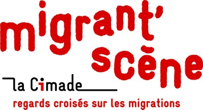

L'HISTOIRE
Celle qui regarde le monde nous raconte un drame devenu banal. Celui d'un jeune réfugié, Enis, fuyant son pays en guerre, cherchant un endroit où se poser pour pouvoir finir de faire
son deuil et recommencer à apprendre à vivre...
Il va croiser, par hasard, la route de Déa, une jeune fille comme il y en a des milliers en
occident : Un peu paumée, perdue entre son adolescence et les prémices de son âge adulte.
Entre les deux ados, le premier regard suffira à les réunir.
Grâce à Enis, Déa va découvrir le monde. Celui qu'elle croyait connaître. Elle va découvrir
l'arbitraire, l'absurde de cette société qui rejette en bloc et en détail, tout ce qui semble venir
d'ailleurs. Et face à l'horreur que lui décrit son compagnon, elle ne pourra pas rester sans agir.
C'est ainsi qu'elle décidera de l'aider à passer en Angleterre où, croit-t-il, les chances d'être accepté
sont meilleures. Malheureusement, dans cette Europe forteresse, l'histoire a tendance à se répéter...
Il suffit de partir de chez soi, de traverser le monde pour grandir subitement. Ou pour vieillir, je ne sais pas. Je ne sais plus...
Énis - "Celle qui regarde le monde"
CRÉDITS
TEXTE
Alexandra BADEA
MISE EN SCÈNE
Florian DELGADO
AVEC
Emma BIGHELLI
Amandine CAVALLI
Lou CHATAGNAT
Maëlle CHOTARD
Eva FRANCO
Angel GIOANNI
Justine IBARS
Elina KHENICHE
Yaël LIEUGARD
Clémentine SIMON
Emma VENANS
RÉGIE LUMIÈRES
Fernand CATRY
RÉGIE PLATEAU | CAMÉRA
Thomas CORRENOZ
DÉCORS | ACCESSOIRES
Le Théâtre du Risque
Guillaume BLIN
Les ateliers municipaux de la ville de JARRIE
PRISE DE VUE ET MONTAGE VIDÉO INTRO
Karim BONNARDEL
ASSISTANTE À LA RÉALISATION
Annelore CHILLAT
REMERCIEMENTS PARTICULIERS
Camille BOURRIER
Clément BASTIAT
Catherine CAVALLI
Frédéric CAVALLI
Geoffroy NICOLE
Andréa CAITUCOLI
Mina KHENICHE
Céline RODRIGUEZ
Philippe CHATAGNAT
Hélène LIEUGARD
Valérie BIGHELLI
Gilles BIGHELLI
Bruno CHAUFFAY
Hugo LEGRIS
Claire ALGLAVE
Guillaume ARSON
Vincent COSTES
Karine VIVANT
Daniel DELPEUCH
Chantal MAOUDJ
DOUGIE
COPRODUCTION
Cie du Vif Théâtre
CSC Malraux
AVEC LE SOUTIEN DE LA CIMADE GRENOBLE
TEASER
PHOTOS